Syntaxes et définitions¶
Définitions¶
Définition D1 : bruit blanc
Une suite de variables aléatoires réelles
 est un bruit blanc :
est un bruit blanc :
 ,
, 

Définition D1 : classe
Une classe est un ensemble incluant des variables ou attributs et des fonctions ou méthodes. Les attributs sont des variables accessibles depuis toute méthode de la classe où elles sont définies. En python, les classes sont des types modifiables.
Définition D1 : point d’entrée du programme
Le point d’entrée d’un programme est la première instruction exécutée par l’ordinateur lors de l’exécution de ce programme.
Définition D1 : test
Les tests permettent d’exécuter des instructions différentes selon la valeur d’une condition logique.
Définition D1 : variable
Une variable est caractérisée par :
un identificateur : il peut contenir des lettres, des chiffres, des blancs soulignés mais il ne peut commencer par un chiffre. Minuscules et majuscules sont différenciées. Il est aussi unique.
un type : c’est une information sur le contenu de la variable qui indique à l’interpréteur python, la manière de manipuler cette information.
Définition D10 : frozenset
Un set est un ensemble de valeurs uniques. Ajouter une valeur déjà dans la liste n’a donc aucun impact. On s’en sert beaucoup pour récupérer une liste d’éléments uniques. Ce type est dit immutable car il est impossible d’ajouter des valeurs. En contrepartie, on peut s’en servir comme clé dans un dictionnaire ou comme valeur dans un set ou frozenset.
Définition D2 : constante
Les constantes sont le contraire des variables, ce sont toutes les valeurs numériques, chaînes de caractères, …, tout ce qui n’est pas désigné par un nom. Les constantes possèdent un type mais pas d’identificateur.
Définition D2 : fonction
Une fonction est une partie d’un programme - ou sous-programme - qui fonctionne indépendamment du reste du programme. Elle reçoit une liste de paramètres et retourne un résultat. Le corps de la fonction désigne toute instruction du programme qui est exécutée si la fonction est appelée.
Définition D2 : instantiaion
Une instance d’une classe C désigne une variable de type C.
Le terme instance ne s’applique qu’aux variables dont le type est une classe.
Définition D3 : fonction récursive
Une fonction récursive est une fonction qui s’appelle elle-même.
Définition D3 : méthode
Les méthodes sont des fonctions qui sont associées de manière explicite à une classe. Elles ont comme particularité un accès privilégié aux données de la classe elle-même.
Définition D3 : type immuable (ou immutable)
Une variable de type immuable ne peut être modifiée. Une opération sur une variable de ce type entraîne nécessairement la création d’une autre variable du même type, même si cette dernière est temporaire.
Définition D4 : attribut
Les attributs sont des variables qui sont associées de manière explicite à une classe. Les attributs de la classe se comportent comme des variables globales pour toutes les méthodes de cette classe.
Définition D4 : chaîne de caractères
Le terme « chaîne de caractères » ou string en anglais signifie une suite finie de caractères, autrement dit, du texte.
Définition D4 : portée d’un variable
La portée d’une variable associée à un identificateur recouvre la portion du programme à l’intérieur de laquelle ce même identificateur la désigne. Ceci implique que, dans cette portion de code, aucune autre variable, aucune autre fonction, aucune autre classe, ne peut porter le même identificateur.
Définition D5 : méthode statique
Les méthodes statiques sont des méthodes qui peuvent être appelées même si aucune instance de la classe où elles sont définies n’a été créée.
Définition D5 : tuple
Les tuple sont un tableau d’objets qui peuvent être de tout type. Ils ne sont pas modifiables (les tuple sont immuables ou immutable).
Définition D5 : variable locale
Une variable locale est une variable dont la portée est réduite à une fonction.
Définition D6 : attribut statique
Les attributs statiques sont des attributs qui peuvent être utilisés même si aucune instance de la classe où ils sont définis n’a été créée. Ces attributs sont partagés par toutes les instances.
Définition D6 : type modifiable (ou mutable)
Une variable de type modifiable peut être modifiée, elle conserve le même type et le même identificateur. C’est uniquement son contenu qui évolue.
Définition D6 : variable globale
Une variable globale est une variable dont la portée est l’ensemble du programme.
Définition D7 : héritage
On dit qu’une classe $B$ hérite d’une autre classe $A$ si la déclaration de $B$ inclut les attributs et les méthodes de la classe $A$.
Définition D7 : liste
Les listes sont des collections d’objets qui peuvent être de tout type. Elles sont modifiables.
Définition D8 : dictionnaire
Les dictionnaires sont des listes de couples. Chaque couple contient une clé et une valeur. Chaque valeur est indicée par sa clé. La valeur peut-être de tout type, la clé doit être de type immuable, ce ne peut donc être ni une liste, ni un dictionnaire. Chaque clé comme chaque valeur peut avoir un type différent des autres clés ou valeurs.
Définition D8 : surcharge
Lorsqu’une classe B hérite de la classe A et redéfinit une méthode de la classe A portant le même nom, on dit qu’elle surcharge cette méthode. S’il n’est pas explicitement précisé qu’on fait appel à une méthode d’une classe donnée, c’est toujours la méthode surchargée qui est exécutée.
Définition D9 : set
Un set est un ensemble de valeurs uniques. Ajouter une valeur déjà dans la liste n’a donc aucun impact. On s’en sert beaucoup pour récupérer une liste d’éléments uniques. Ce type est dit mutable car il est possible d’ajouter des valeurs. Comme pour les dictionnaires, les valeurs stockées dans un ensemble doivent être immutables. Sans cela, le langage ne pourrait garantir l’unicité.
Figures¶
Figure F1 : Open-High-Low-Close-Volume
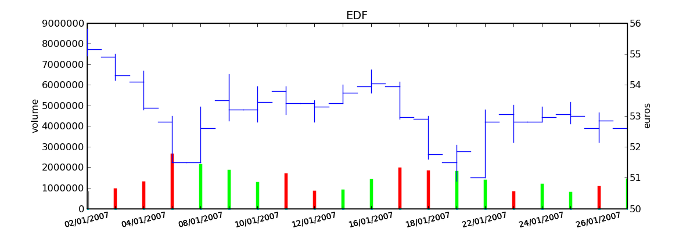Graphe Open-High-Low-Close-Volume d’une série financière. Les histogrammes représentant les les volumes, vert pour journée positive, rouge pour une journée négative. Chaque barre verticale relie les prix Low et High d’une même journée, les barres horizontales sont les prix Open à gauche et Close à droite.
Figure F10 : 4 actions françaises
BNP |
Société Générale |
| 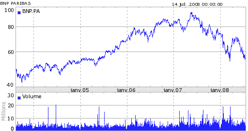 | 
|
| 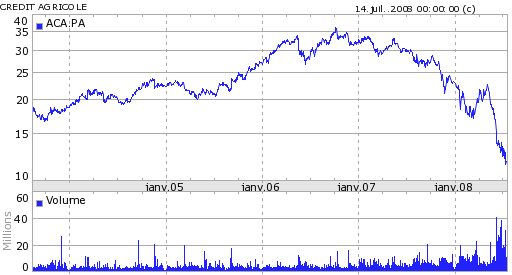 | 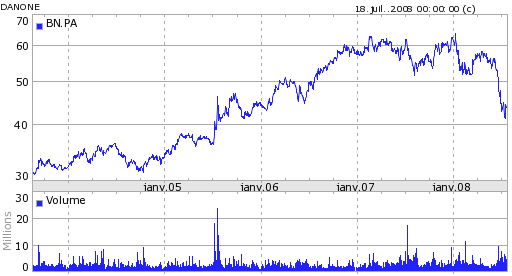 |
Crédit Agricole |
Danone |
Quatre actions, trois banquaires (BNP, Société Générale, Crédit Agricole) et une société issue de l’alimentaire Danone.
Figure F11 : Rendement pour 4 actions françaises
BNP |
Société Générale |

|
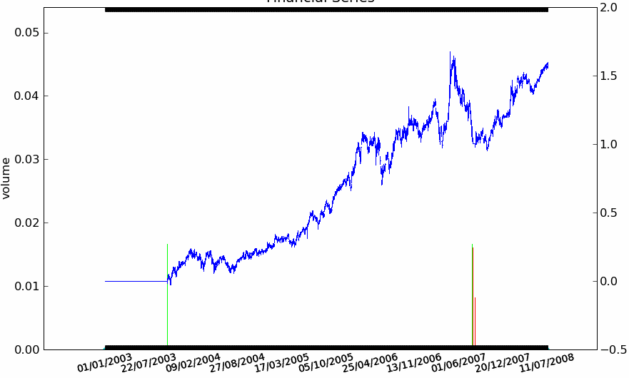 |

|
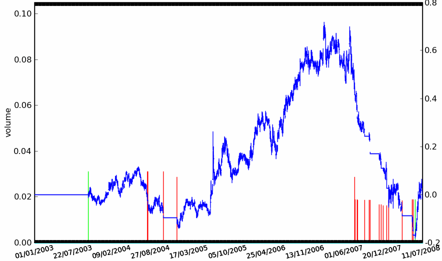 |
Crédit Agricole |
Danone |
La stratégie Trend Following est appliquée aux quatre séries avec des résultats mitigés. Elle réagit bien sur la BNP et la Société Générale, elle donne de mauvais résultats sur le Crédit Agricole. Sur Danone, la stratégie conserve une position acheteuse puis perd tout ce qu’elle avait gagné par la suite alors que la série n’a plus de trend aussi évident et que sa volatilité est élevée. La série du Crédit Agricole est plus longue de deux ans mais cela n’explique pas ses mauvais résultats, la stratégie prend une série de mauvaises décisions ce qui tend à montrer qu’elle n’est pas suffisamment robuste.}
Figure F12 : Deal

Les deals sont construits à partir de la position de la stratégie. Chaque flèche à double sens désigne un deal Lorsqu’un ordre d’achat est passé alors que la position est déjà positive, on décompose en deal dont les temps de vie se superposent.
Figure F13 : Deal en image

|
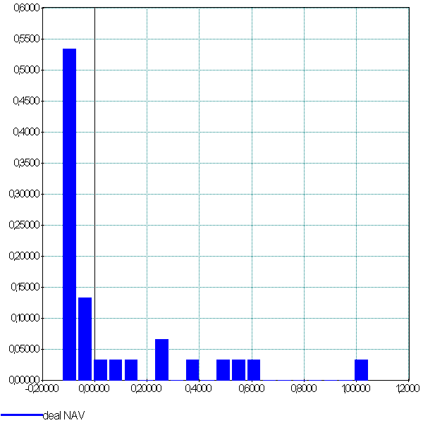 | 
|
La première image est celle de la distribution théorique des gains calculée par Bouchaud et Potters dans leur article [Potters2005]. La distribution empirique n’est pas toujours facile à construire sur des historiques qui ne sont pas assez longs : dans le cas de notre stratégie Trend Following, il n’existe que cinq deals. Il faut donc assembler les deals de la même stratégie sur plusieurs séries. Le résultat correspond assez bien à la distribution théorique. Le troisème graphe représente la distribution des durées des deals exprimées en jours (axe des abscisses). Les deals négatifs sont nombreux et de courtes durées.
Figure F14 : Deal positifs, négatifs, logns, courts
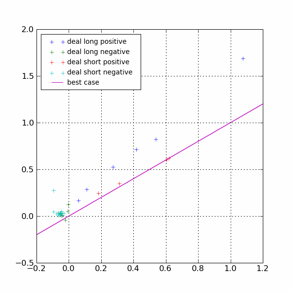{kind=link}
Dans ce graphe, pour un deal positif, plus il est proche de la diagonale, plus la décision de coupure de la position a été proche du maximum envisageable. Dans ce graphe, on voit que la stratégie est meilleure lorsqu’elle coupe une position vendeuse plutôt qu’acheteuse. Il faudrait sans doute pour l’améliorer tenir compte du signe de la position avant de couper même si cette conclusion est osée étant donné le peu de deals short positifs.
Figure F2 : OHLC Intraday

Graphe Open-High-Low-Close-Volume d’une série financière intraday. Les volumes représentés ici sont ceux d’une série européenne, il y a une première vague avant midi, juste avant la pause déjeuner, il y a une seconde vague qui correspond à l’ouverture des marchés américains. Certaines statistiques américaines tombe parfois à 13h30 heure française et ont un fort impact très localisé dans le temps sur les séries financières les plus traitées.}
Figure F3 : Exemple de carnet d’ordres, tous les ordres ne sont pas représentés.

Figure F4 : Action BNP et Trend Following
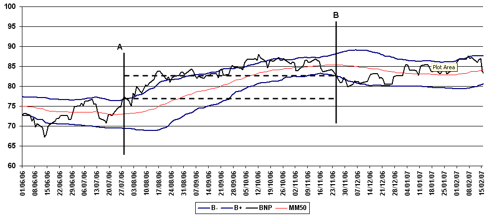Cours de l’action textit{BNP} accompagné par sa moyenne mobile 50 et ses bandes de Bollinger. Une stratégie simple de trend following consiste à acheter lorsque le cours dépasse sa bande supérieure de Bollinger (point A) et à revendre lorsque le cours passe sa bande inférieure (point B). Le gain est alors la différence des cours d’achat et de vente. Lorsque la tendance est baissière, il suffit de vendre d’abord puis d’acheter ensuite.
Figure F5 : Action BNP et Mean Reversing

Cours de l’action textit{BNP} accompagné par sa moyenne mobile 50 et ses bandes de Bollinger. Une stratégie simple de mean reversing consiste à acheter lorsque le cours dépasse sa bande inférieure de Bollinger (point A) et à revendre lorsque le cours revient vers sa borne supérieure (point B). Le gain est alors la différence des cours d’achat et de vente.
Figure F6 : Action BNP et pair trading
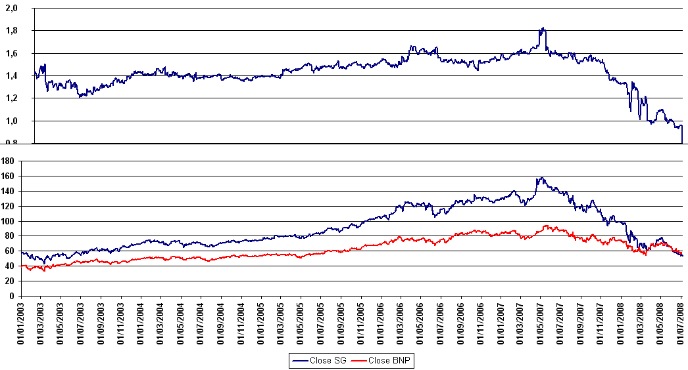Rapport entre l’action Société Générale et l’action BNP. On observe une croissance supérieure pour la Société Générale jusqu’en août 2007 date du début de la crise des subprimes puis une nette dégradation depuis l’affaire Kerviel en janvier 2008. Auparavant, la série du rapport paraît plus stable et il semble plus judicieux de faire du mean reversing.
Figure F7 : Le cours de la BNP entre début 2003 et mi 2008

|
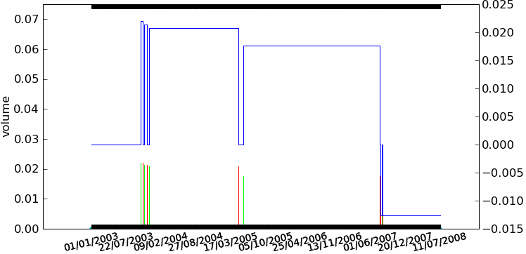 |
NAV de la stratégie Trend Following décrite au paragraphe Analyse d’une stratégie. Le second graphe représente la position de la stratégie, une position positive signifie une position acheteuse (long), une position négative signife une position vendeuse (short). C’est un graphe qui ne représente pas la position mais la quantité d’actions achetées ou vendues pour une position proche de un euros. Ceci explique que cette seconde courbe présente des paliers de hauteurs différentes, il s’agit de l’inverse du prix observé lors de l’ouverture d’une position.}
| 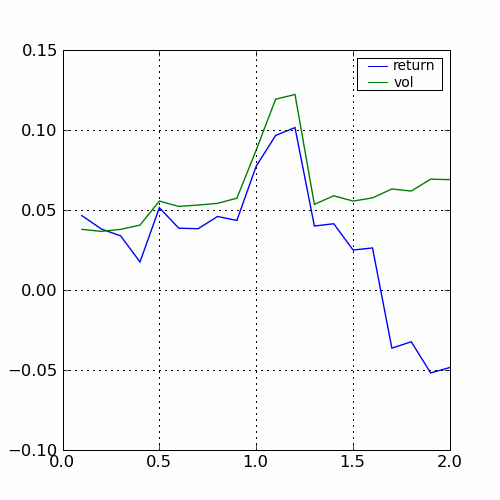 | ||
|
|
|
Variations selon les trois paramètres  ,
,  ,
,  .
Le pic obtenu pour la valeur
.
Le pic obtenu pour la valeur  est très localisé
autour de cette valeur, il faut s’attendre à ce que la stratégie obtienne des résultats très différents
sur des séries similaires. La courbe pour $beta$ est stable, on choisira une valeur dans cette zone.
Les rendements passent du simple au double en fonction de la largeur
des bandes de Bollinger. Ces graphes ne montrent que l’évolution des rendements et de la volatilité,
ils pourraient aussi montrer l’évolution des drawdowns ou du ratio de Sharpe.
est très localisé
autour de cette valeur, il faut s’attendre à ce que la stratégie obtienne des résultats très différents
sur des séries similaires. La courbe pour $beta$ est stable, on choisira une valeur dans cette zone.
Les rendements passent du simple au double en fonction de la largeur
des bandes de Bollinger. Ces graphes ne montrent que l’évolution des rendements et de la volatilité,
ils pourraient aussi montrer l’évolution des drawdowns ou du ratio de Sharpe.
Problèmes¶
Problème P1 : Régression
Soient deux variables aléatoires  et
et  ,
l’objectif est d’approximer la fonction
,
l’objectif est d’approximer la fonction
 .
Les données du problème sont
un échantillon de points
.
Les données du problème sont
un échantillon de points  et un modèle paramétré avec
et un modèle paramétré avec  :
:

avec  ,
,
 bruit blanc,
bruit blanc,
 est une fonction de paramètre .
est une fonction de paramètre .
Problème P1 : optimisation d’un portefeuille
Version 1 : minimisation du risque sous contrainte de rendement

Version 2 : maximisation du rendement sous contraine de risque

Problème P2 : Classification binaire
Soient deux variables aléatoires et  ,
l’objectif est d’approximer la fonction
.
Les données du problème sont
un échantillon de points
et un modèle paramétré avec :
,
l’objectif est d’approximer la fonction
.
Les données du problème sont
un échantillon de points
et un modèle paramétré avec :

avec ,
une variable aléatoire,
est une fonction de paramètre .
Syntaxe¶
Syntaxe S1 : Attraper une exception
try:
# ... instructions à protéger
except type_exception_1:
# ... que faire en cas d'erreur de type type_exception_1
except (type_exception_i, type_exception_j):
# ... que faire en cas d'erreur de type type_exception_i ou type_exception_j
except type_exception_n:
# ... que faire en cas d'erreur de type type_exception_n
except:
# ... que faire en cas d'erreur d'un type différent de tous
# les précédents types
else:
# ... que faire lorsque une erreur aucune erreur n'est apparue
Syntaxe S1 : Déclaration d’une classe
class nom_classe :
# corps de la classe
# ...
Syntaxe S1 : Tests
if condition1 :
instruction1
instruction2
...
else :
instruction3
instruction4
...
Syntaxe S1 : importer un module (1)
import importlib
import module_exemple
module_exemple.exemple_variable = 10
importlib.reload(module_exemple)
print(module_exemple.exemple_variable) # affiche 3
Syntaxe S10 : Déclaration d’un attribut statique
class nom_class :
attribut_statique = valeur
def nom_methode (self,params, ...):
nom_class.attribut_statique2 = valeur2
@staticmethod
def nom_methode_st (params, ...) :
nom_class.attribut_statique3 = valeur3
Syntaxe S11 : Déclaration d’une propriété
class nom_classe :
nom_propriete = property (fget, fset, fdel, doc)
Syntaxe S12 : Déclaration d’une propriété (2)
class nom_classe :
@property
def fget_variable(self):
return self.variable
@variable.setter
def fset_variable(self, v):
self.variable = v
Syntaxe S13 : Déclaration de l’opérateur __copy__
class nom_classe :
def __copy__ () :
copie = nom_classe(...)
# ...
return copie
Syntaxe S14 : Déclaration d’attributs figés
class nom_classe (object) :
__slots__ = "attribut_1", ..., "attribut_n"
Syntaxe S15 : Héritage
class nom_classe (nom_ancetre) :
# corps de la classe
# ...
Syntaxe S16 : Surcharge de méthodes héritées
class nom_classe (nom_ancetre) :
def nom_autre_methode (self, ...) :
# ...
def nom_methode (self, ...) :
nom_ancetre.nom_methode (self, ...)
# appel de la méthode définie chez l'ancêtre
nom_ancetre.nom_autre_methode (self, ...)
# appel d'une autre méthode définie chez l'ancêtre
self.nom_autre_methode (...)
# appel d'une méthode surchargée
Syntaxe S2 : Instanciation d’une classe
cl = nom_classe()
Syntaxe S2 : Instruction pass
signe = 0
x = 0
if x < 0: signe = -1
elif x == 0:
pass # signe est déjà égal à 0
else :
signe = 1
Syntaxe S2 : Lever une exception
raise exception_type(message)
Cette instruction lance l’exception exception_type associée au message
message. Le message est facultatif, lorsqu’il n’y en a pas, la syntaxe
se résume à raise exception_type.
Syntaxe S2 : importer un module (2)
import module_exemple as alias
c = alias.exemple_classe()
print(c)
print(alias.exemple_fonction())
Syntaxe S3 : Boucle while
while cond :
instruction 1
...
instruction n
Syntaxe S3 : Déclaration d’une méthode
class nom_classe :
def nom_methode(self, param_1, ..., param_n):
# corps de la méthode...
Syntaxe S3 : importer un module (3)
from module_exemple import * # décommmandé
from module_exemple import exemple_classe, exemple_fonction
c = exemple_classe()
print(c)
print(exemple_fonction())
Syntaxe S4 : Appel d’une méthode
cl = nom_classe() # variable de type nom_classe
t = cl.nom_methode (valeur_1, ..., valeur_n)
Syntaxe S4 : Boucle for
for x in ensemble:
instruction 1
...
instruction n
Syntaxe S5 : Déclaration d’un attribut
class nom_classe :
def nom_methode (self, param_1, ..., param_n) :
self.nom_attribut = valeur
Syntaxe S5 : Liste en extension
[ expression for x in ensemble ]
Syntaxe S6 : Déclaration d’un constructeur
class nom_classe :
def __init__(self, param_1, ..., param_n):
# code du constructeur
Syntaxe S6 : Déclaration d’une fonction
def fonction_nom (par_1, ..., par_n) :
instruction_1
...
instruction_n
return res_1, ..., res_n
Syntaxe S7 : Appel d’un constructeur
x = nom_classe (valeur_1,...,valeur_n)
Syntaxe S7 : Appel d’une fonction
x_1, ..., x_n = fonction_nom (valeur_1, valeur_2, ..., valeur_n)
Syntaxe S8 : Déclaration de l’opérateur __str__
class nom_class :
def __str__ (self) :
# corps de l'opérateur
return...
Syntaxe S8 : Valeurs par défaut
def fonction_nom (param_1, param_2 = valeur_2, ..., param_n = valeur_n):
...
Syntaxe S9 : Déclaration d’une méthode statique
class nom_class :
@staticmethod
def nom_methode(params, ...) :
# corps de la méthode
...
Syntaxe S9 : Nombre indéfini de paramètres
def fonction (param_1, ..., param_n, *liste, **dictionnaire) :
Tables¶
Table T1 : Implantation des Hedge Funds en 2007
Implantation des Hedge Funds de par le monde et répartition selon les différentes stratégies de trading. Source Lipper Mars 2007, extrait de [Jacquillat2008].
Lieu |
Répartition |
|---|---|
Iles Cayman |
34 % |
USA |
20 % |
British Virgin Islands |
14 % |
Bermudes |
5 % |
Luxembourg |
5 % |
France |
4 % |
Irlande |
3 % |
Bahamas |
3 % |
Guernsey |
2 % |
Antilles Néerlandaises |
2 % |
Stratégie |
Répartition |
|---|---|
Multi=stratégie |
31% |
Long / Short Equity |
23% |
Event Driven |
13% |
Commodity Trading Advisor (CTA) |
6% |
Fixed Income Arbitrage |
5% |
Emerging Markets |
4% |
Global Macro |
4% |
Equity Market Neutral |
4% |
Table T2 : Indicateurs BNP, Crédit Agricole, Danone, Société Générale
BNP |
1,00 |
0,75 |
0,67 |
0,44 |
SG |
0,75 |
1,00 |
0,63 |
0,42 |
CA |
0,67 |
0,63 |
1,00 |
0,35 |
Danone |
0,44 |
0,42 |
0,35 |
1,00 |
Matrice des autocorrélations pour les rendements quotidiens des quatre actions BNP, Société Générale, Crédit Agricole et Danone. Les corrélations sont moins fortes entre Danone et une banque qu’entre banques. Bien que les données quotidiennes soient beaucoup plus propres que des données intraday, il faut quand même vérifier que les séries sont homogènes et contiennent les mêmes dates avant de calculer les corrélations sur les rendements.